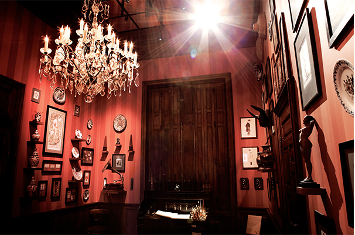
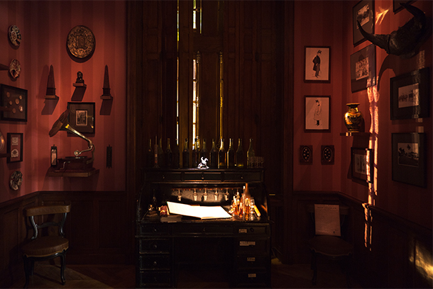
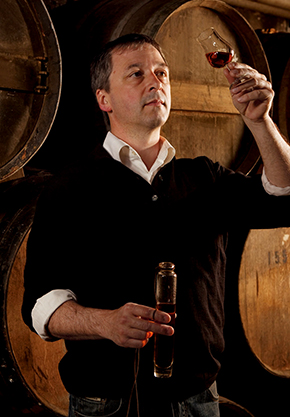
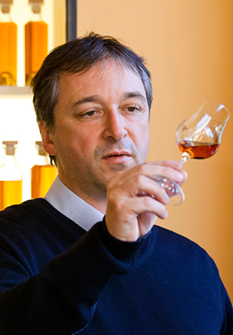
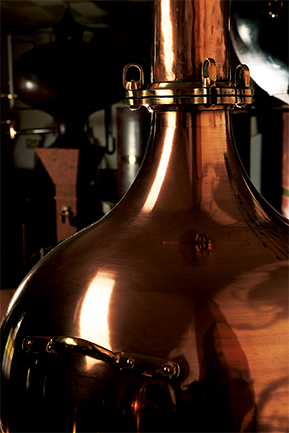
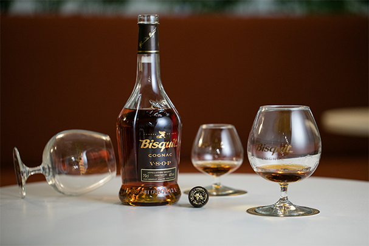
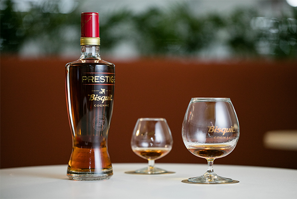
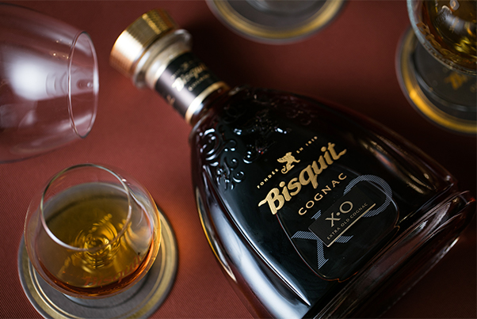
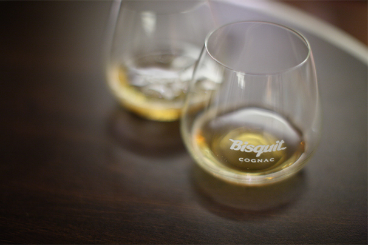
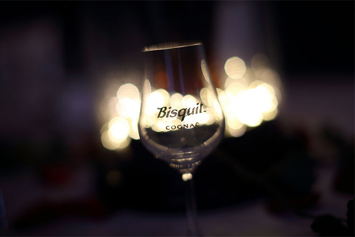

品牌故事
百事吉是一款珍贵且酒质卓越的干邑。蒸馏时间、传统工艺及丰富个性都精准掌握、恰到好处。这款精雕细琢的干邑将赠予品尝者一趟难忘之旅——这里没有时间限制，只有自由自在的探索与分享。
历史传承
百事吉的故事就如其干邑本身一样充满个性、层次丰富、勃勃生机，是创始人亚历山大·百事吉先生的传奇写照。
亚历山大·百事吉先生出生的家庭备受尊敬，在干邑地区葡萄酒贸易的根源可追溯到1692年。他于1819年创立百事吉干邑，这由人工精雕细琢的干邑远从那时起就一直在它的传统发源地被孕育和酿造。
亚历山大·百事吉先生并不甘于成为一个普通人或被期望成为的人。他希望借助丰厚的家族基础和个人的探索精神活出更非凡的人生。他相信自己拥有更丰富的个性并追求各种生活体验与冒险。
这位干邑之子年轻时便游历中国、欧洲及俄罗斯，将百事吉干邑介绍志同道合者。这种分享百事吉丰富个性的理念传承至今、历久弥新。
在百事吉古堡里面有个神奇的房间，里面放着亚历山大·百事吉先生的出生证明、其女婿到访中国收集的陶瓷，甚至还有一只引人注目的酒桶，讲述着百事吉与末代沙皇尼古拉二世的故事。
 首席酿酒师
每一口百事吉干邑都满载对时间、传统及个性的精准掌握和极致发挥，正如我们的首席酿酒师丹尼斯(Denis)身上的每道血脉都流淌着如干邑般金铜色的探索精神。他对个性塑造与感性分享赤诚追求是创新的、纯手工的、经得起时间考验的。他对品牌的捍卫绝对配得上创始人亚历山大·百事吉先生的期待，他的广阔视野足以牵动情感、撩动味觉。
蒸馏工艺
百事吉的蒸馏工艺追求更深层、更内在、更充满人性的，那就是对时间的精准掌握及对时光的极致享受。这种讲究时间、传统及丰富个性的工艺在每一代首席酿酒师身上都得到完美传承，将对手工造诣及精湛技术的尊崇表达得淋漓尽致。
  独特口感
丰富的个性及醇厚的口感创造出从嗅觉到味蕾的永恒体验。从1819年开始，百事吉干邑的浓郁果香被充分展现，与辛香味及丰富的橡木味完美结合。以人工精雕细琢，以独特极致的内涵深受喜爱。
 